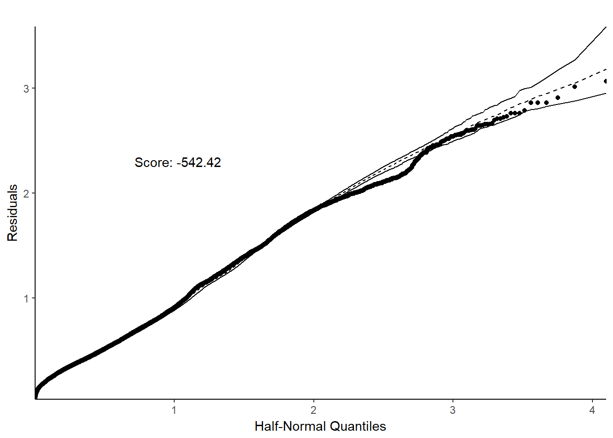
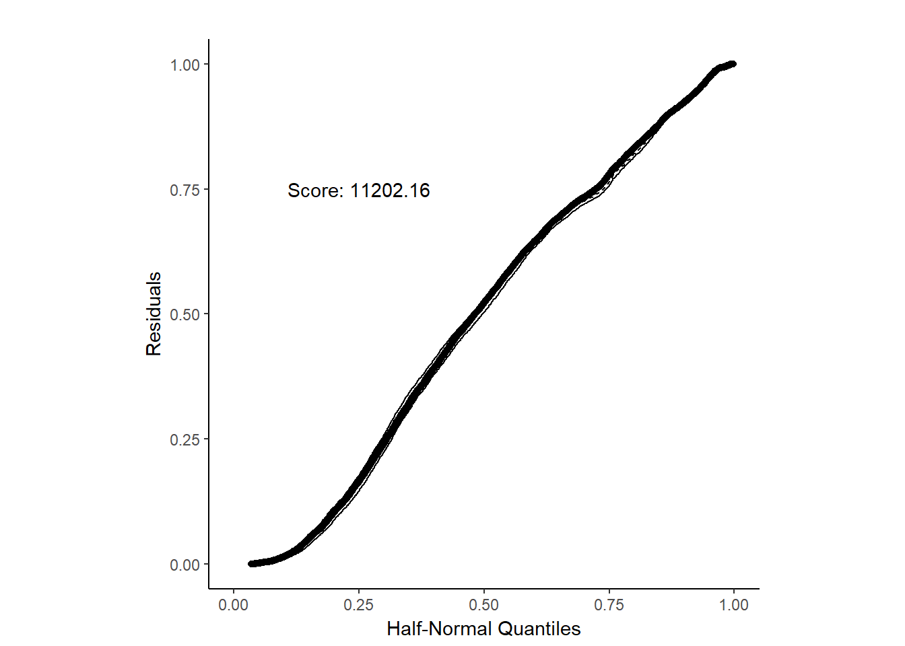

The half-normal plots
Alicja Gosiewska
13 stycznia 2018
Half-normal plot
The half-normal plot presented in this chapter is one of the tools designed to evaluate the goodness of fit of a statistical model. It is a graphical method for comparing two probability distributions by plotting their quantiles against each other.
Points on the plot correspond to ordered absolute values of model diagnostic (i.e. standardized residuals) plotted against theoretical order statistics from a half-normal distribution.
There are various implementations of half-normal plots in R. Functions for generating such plotes are available in packages auditor, faraway, hnp, but also in others. Some functions can only draw a simple half-normal plot, while some have additional functionalities like a simulated envelope and score of goodness-of-fit.
Below we present example of the use of half-normal plots for a logistic regression. Plots are generated by plotHalfNormal function from package auditor. By default, deviance residuals were used as diagnostic values.
set.seed(123)
library(auditor)
library("breakDown")
HR_glm_model <- glm(left~., data = HR_data, family = "binomial")
plotHalfNormal(HR_glm_model)
If diagnostic values are from the normal distribution, they are close to a straight line. However, if they don’t come from a normal distribution, they still show a certain trend. Simulated envelopes can be used to help verify the correctness of this trend. For a well-fitted model, diagnostic values should lay within the envelope.
A useful tool to compare goodness-of-fit of two models is Score calculated by plotHalfNormal function. It is a sum of logarithms of estimated PDF at each point. Scores are calculated on the basis of simulated data, so they may differ between function calls.
Quantile scale
In function plotHalfNormal there is also a posibility to draw half-normal plot on a quantile scale.
plotHalfNormal(HR_glm_model, quant.scale = TRUE)
References
Gosiewska Alicja, Biecek Przemysław.2018. auditor - audit/verification of regression models https://github.com/mi2-warsaw/auditor